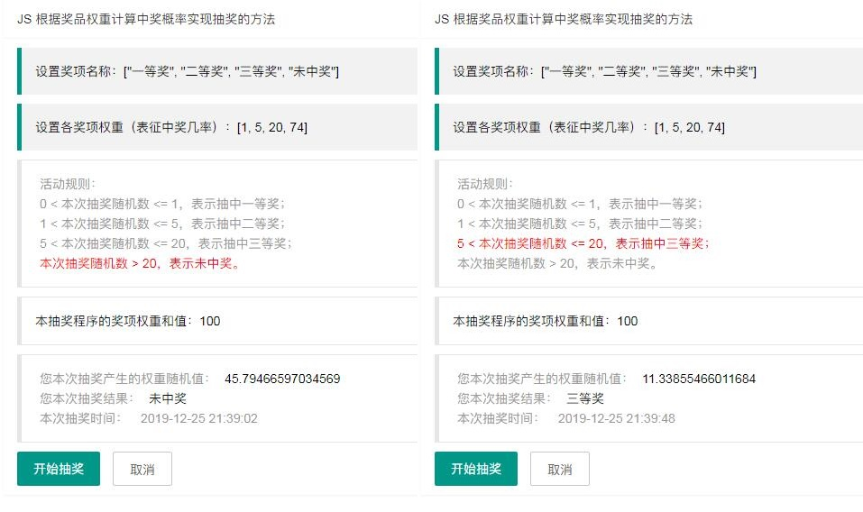
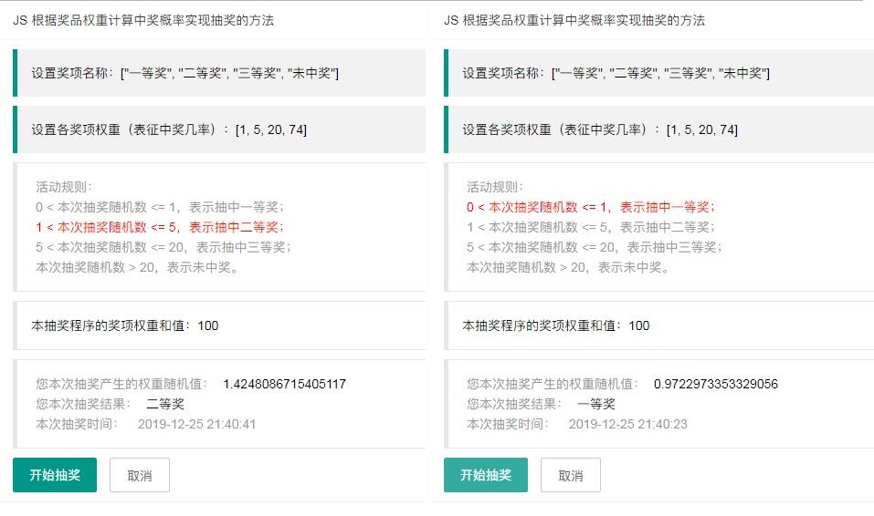

本文主要介绍：使用 JS 根据奖品权重计算中奖概率实现抽奖的方法。
奖项名称：["一等奖", "二等奖", "三等奖", "未中奖"]。假设抽奖活动设置了这四个奖项，当然开发者可以扩展更多。
var prizes = ["一等奖","二等奖","三等奖","未中奖"]; //奖项名称数组奖项权重：[1, 5, 20, 74]。奖项权重主要用来表征各奖项的中奖几率，这里奖项权重数组的和值为100（=1+5+20+74），其中1表示一等奖的中奖概率为1%；5表示一等奖的中奖概率为5%；20表示三等奖的中奖概率为20%；最后剩下的74表示未中奖的概率为74%。
var prizeWeight = [1, 5, 20, 74]; //奖项权重数组，表征各奖项的中奖机会占总数的百分比。比如一等奖的中奖率是1%，二等奖的中奖率是5% 如果抽奖活动设置的奖项更多，开发者也可以相应扩展权重数组的和值，比如权重和值为500，1000等，并相应设置数组元素来表征每抽500次，可中多少次、什么等级的奖项。
另外，开发者也可以将奖项名称与奖项权重数组合并声明在一个对象中：
//设置奖项名称、权重等数组
var prizes = [
{"name": "一等奖", "weight": 1},
{"name": "二等奖", "weight": 5},
{"name": "三等奖", "weight": 20},
{"name": "未中奖", "weight": 74}
];因为本文是简单实现，本抽奖程序的原理也设计得较为简单：
比如：某次抽奖生成的权重随机数（weightRandom）为 15.15，按照 1.3 的活动规则，因为 5 < 15.15 <= 20，表示此次生成的权重随机数（weightRandom）可中三等奖。
下面分别来实现：
//数组累加求和函数：Array.reduce(function(prev ,cuurentValue), initialValue)
var weightSum = prizeWeight.reduce(function(prev, currVal){ //计算权重之和：1+5+20+74=100
return prev + currVal; //prev 是前一次累加后的数值，currVal 是本次待加的数值
}, 0);//抽奖函数
var lottery = function(weightSum) {
var res = "未中奖"; //默认设置抽奖结果为“未中奖”
console.log("本程序的奖项权重和值：", weightSum);
//生成一个权重随机数，介于0-weightSum之间
var random = Math.random()*weightSum; //生成一个权重随机数（0 到 weightSum 之间）
console.log("本次抽奖的权重随机数：", random);
//权重数组重组并排序
var concatWeightArr = prizeWeight.concat(random); //将随机数加入权重数组
var sortedWeightArr = concatWeightArr.sort(function(a, b){return a-b;}); //将包含随机数的新权重数组按从小到大（升序）排序
console.log("含权重随机数的新权重数组升序排序后：", sortedWeightArr);
//索引权重随机数的数组下标
var randomIndex = sortedWeightArr.indexOf(random); //索引随机数在新权重数组中的位置
randomIndex = Math.min(randomIndex, prizes.length -1); //权重随机数的下标不得超过奖项数组的长度-1，重新计算随机数在奖项数组中的索引位置
console.log("本次权重随机数对应的数组下标：", randomIndex);
//取出对应奖项
res = prizes[randomIndex]; //从奖项数组中取出本次抽奖结果
console.log("本次抽奖结果：", res);
return {"weightSum": weightSum , "weightRandom": random, prizeIndex: randomIndex, "data": res}; //返回本次抽奖结果
};需要说明的是：
（1）在抽奖函数中，首先生成一个权重随机数（random），然后将这个权重随机数（random）与原权重数组合并（使用 Array.concat() 函数，返回值是一个新数组，原权重数组不变），生成一个新权重数组，并将新权重数组按照数值从小到大（升序）来排序（使用 Array.sort() 函数）；这样，权重随机数（random）按照大小顺序，就会落在某两个奖项权重数值之间。最后索引权重随机数（random）在新权重数组中的下标，就可以取出对应的奖项名称数组中的元素。
（2）比如：某次抽奖函数生成的权重随机数为 15.15，与原来的权重数组：[1, 5, 20, 74] 合并，并排序，将得到新权重数组：[1, 5, 15.15，20, 74]，权重随机数（15.15 ）落在 5-20 之间，权重随机数（15.15 ）在新权重数组中的下标是 2，对应取出奖项名称数组下标为 2 的元素：prizes[2] = "三等奖"。由此判断本次抽奖可中三等奖。
（3）在抽奖函数中，为了确定权重随机数（random）的大小对应何种奖项时，即比较权重随机数与权重数组中各元素数值的大小时，编者没有使用传统的 for 循环来遍历比较权重随机数（random）与 prizeWeight 数组中各元素的大小，而是合并生成新的权重数组并排序，再使用 Array.indexOf() 函数来索引权重随机数（random）的下标，这个下标对应的奖项名称也就取出了。
//layui 模块化引用
layui.use(['jquery', 'util'], function(){
var $ = layui.$, util = layui.util;
//设置奖项名称、权重、中奖次数等数组
var prizes = ["一等奖", "二等奖", "三等奖", "未中奖"]; //奖项名称数组
var prizeWeight = [1, 5, 20, 74]; //奖项权重数组，表征各奖项的中奖机会占总数的百分比。比如一等奖的中奖率是1%，二等奖的中奖率是5%
//开发者也可合并声明奖项名称、权重等数组在一个对象中
//var prizes = [
// {"name": "一等奖", "weight": 1},
// {"name": "二等奖", "weight": 5},
// {"name": "三等奖", "weight": 20},
// {"name": "未中奖", "weight": 74}
//];
//数组累加求和函数：Array.reduce(function(prev ,cuurentValue), initialValue)
var weightSum = prizeWeight.reduce(function(prev, currVal){ //计算权重之和：1+5+20+74=100
return prev + currVal; //prev 是前一次累加后的数值，currVal 是本次待加的数值
}, 0);
document.getElementById("weightSum").innerHTML = weightSum; //设置权重和值
//抽奖函数
var lottery = function(weightSum) {
var res = "未中奖"; //默认设置抽奖结果为“未中奖”
console.log("本程序的奖项权重和值：", weightSum);
//生成一个权重随机数，介于0-weightSum之间
var random = Math.random()*weightSum; //生成一个权重随机数（0 到 weightSum 之间）
console.log("本次抽奖的权重随机数：", random);
//权重数组重组并排序
var concatWeightArr = prizeWeight.concat(random); //将随机数加入权重数组
var sortedWeightArr = concatWeightArr.sort(function(a, b){return a-b;}); //将包含随机数的新权重数组按从小到大（升序）排序
console.log("含权重随机数的新权重数组升序排序后：", sortedWeightArr);
//索引权重随机数的数组下标
var randomIndex = sortedWeightArr.indexOf(random); //索引随机数在新权重数组中的位置
randomIndex = Math.min(randomIndex, prizes.length -1); //权重随机数的下标不得超过奖项数组的长度-1，重新计算随机数在奖项数组中的索引位置
console.log("本次权重随机数对应的数组下标：", randomIndex);
//取出对应奖项
res = prizes[randomIndex]; //从奖项数组中取出本次抽奖结果
console.log("本次抽奖结果：", res);
return {"weightSum": weightSum , "weightRandom": random, prizeIndex: randomIndex, "data": res}; //返回本次抽奖结果
};
//注册按钮事件
$('.layui-btn[data-type="save"]').on('click', function () {
var res = lottery(weightSum);
document.getElementById("dateNow").innerHTML = util.toDateString(new Date()); //输出本次抽奖时间
document.getElementById("weightRandom").innerHTML = res.weightRandom; //输出本次抽奖的权重随机数
document.getElementById("printData").innerHTML = res.data; //输出本次抽奖结果
//重置中奖规则文字的字体颜色
$('.rule-body>p').css("color", "inherit");
$('.rule-body>p:eq(' + res.prizeIndex + ')').css("color", "red");
});
});

项目地址：https://gitee.com/kexin_front_end/js_lottery
演示地址：https://kexin_front_end.gitee.io/js_lottery/js_lottery.html
本文介绍的抽奖程序原理仅为 JS 简单实现，适用的场景十分有限，如果遇到需要设计更复杂的抽奖程序，也许开发者需要编写更为健壮、强大、公平、中奖次数可控的算法来实现抽奖函数。